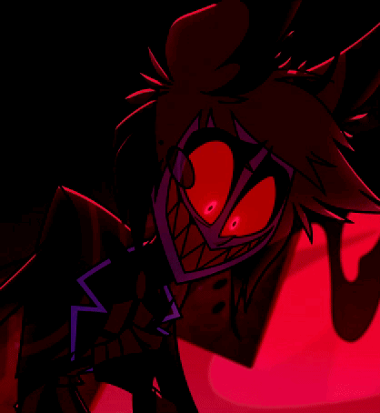

El Demonio de la Radio
Alastor es uno de los Overlords más poderosos del Infierno, famoso por su estilo antiguo, su sonrisa eterna y su magia de radio clásica. Mantiene una intensa rivalidad con Vox, el demonio de la televisión. Su enfrentamiento es el choque definitivo entre dos eras: el encanto macabro de la radio contra la obsesión de la tecnología moderna.
